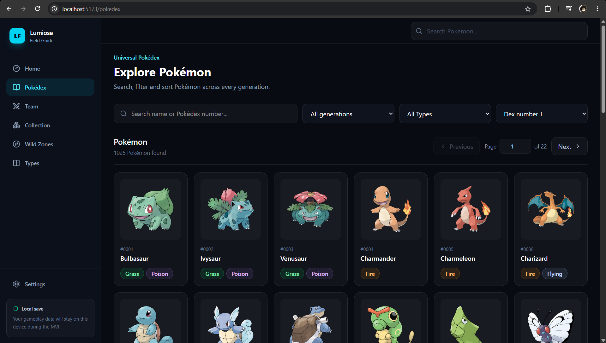
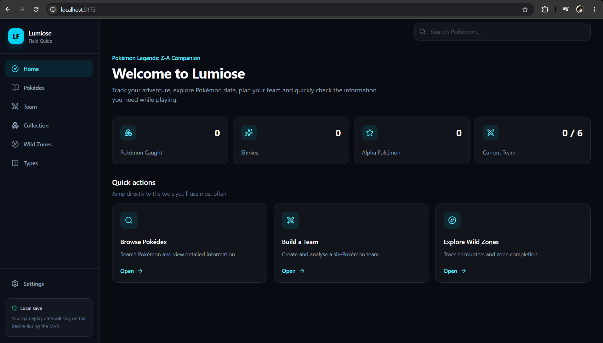

{kind=link}
1,025 Pokémon Dataset
A locally generated indexed dataset provides the foundation for fast Pokémon browsing without repeated API requests.
REACT • TYPESCRIPT • DATA-DRIVEN WEB APPLICATION
An in-development Pokémon companion web application built with React and TypeScript. The current working foundation is a Universal Pokédex containing 1,025 Pokémon with search, filtering, sorting, and pagination, while additional game-specific and personalized tools are planned for future development.

In Development01 • OVERVIEW
The Pokémon Companion Platform is an in-development web application designed to bring Pokémon data, game-specific information, and personalized gameplay tools into one expandable interface.
The currently functional part of the project is the Universal Pokédex. It contains 1,025 Pokémon and supports client-side searching, filtering by generation and type, sorting, and pagination.
The surrounding interface already includes navigation concepts for future modules such as team building, collection tracking, Wild Zones, and type tools, but those areas are currently placeholders rather than completed features.

02 • PROJECT GOAL
A basic Pokédex can already be replaced by a web search, so the goal of this project is to build tools that become more useful as the user interacts with the application.
The longer-term platform is intended to combine universal Pokémon data with game-specific information, personal collection tracking, team analysis, battle coverage tools, progression tracking, and suggestions based on the player's own data.
03 • DATA ARCHITECTURE
The application is designed so that shared Pokémon information does not need to be duplicated for every supported game. Universal species data is kept separate from game-specific mechanics, encounters, locations, forms, availability, and progression information.
Shared species information such as Pokédex number, typing, base statistics, generation, sprites, and other reusable data.
Frequently used Pokémon information is stored locally so browsing does not depend on repeated API requests.
Future game modules are intended to add encounter locations, mechanics, progression information, and game-specific properties without duplicating universal species data.
Future collection, team, and progression tools are intended to combine universal Pokémon data with game-specific and user-owned information.
04 • CURRENT IMPLEMENTATION
A locally generated indexed dataset provides the foundation for fast Pokémon browsing without repeated API requests.
Pokémon can be quickly located through client-side search over the local indexed dataset.
The Pokédex supports filtering by characteristics such as Pokémon type and generation.
Pokémon can be ordered using base-stat information to compare species more effectively.
Large result sets are divided into manageable pages instead of rendering the complete dataset at once.
Reusable Pokémon and type components are designed to work across desktop and mobile screen sizes.
05 • POKÉDEX WORKFLOW
The generated dataset is loaded into the application for immediate client-side access.
Search terms, Pokémon types, generation selections, and other criteria reduce the working result set.
The filtered dataset can be reorganized using selected statistics or ordering criteria.
Only the Pokémon needed for the current page are rendered through reusable interface components.
06 • ENGINEERING DECISIONS
Frequently used Pokémon data is generated locally to reduce repeated network requests and improve browsing speed.
Universal Pokémon information is separated from game-specific information so multiple games can share common species data.
Pokémon cards, type indicators, filters, and interface elements are designed as reusable React components.
React Router provides a structure that can grow from the universal Pokédex into Pokémon pages and game-specific companion modules.
07 • CHALLENGES
Browsing more than one thousand Pokémon requires efficient filtering, sorting, pagination, and rendering rather than repeatedly requesting and displaying every record.
Pokémon share core species data across games, while encounters, mechanics, forms, locations, and availability can differ. The data architecture needs to represent both without unnecessary duplication.
The platform needs to remain flexible enough for future collection, team, battle, and game-progress systems without overengineering features that have not yet been implemented.
08 • CURRENT STATE
The current application provides a working Universal Pokédex with 1,025 Pokémon, local indexed data, search, generation and type filtering, sorting, pagination, and a responsive interface.
The Team, Collection, Wild Zones, Types, and other companion modules shown in the application navigation are currently placeholders for future development.
09 • WHAT I LEARNED
This project has reinforced the importance of structuring data around how it will be reused rather than simply matching the first feature being built.
It has also provided practical experience with React component design, TypeScript, client-side data transformation, routing, filtering, pagination, and balancing performance with future extensibility.
10 • PLANNED EXPANSION
Game-specific Wild Zone, encounter, progression, and gameplay information for Pokémon Legends: Z-A.
Allow players to record which Pokémon they own and track collection progress independently for supported games.
Build teams using owned Pokémon and evaluate their combined characteristics.
Analyse offensive and defensive type coverage and identify gaps within a selected team.
Expand individual Pokémon pages with statistics, typing, game-specific availability, and related information.
Cloud-backed accounts may later allow collection and progress data to persist across devices.
{kind=link}